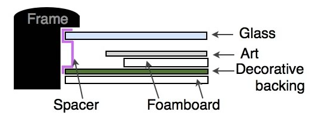
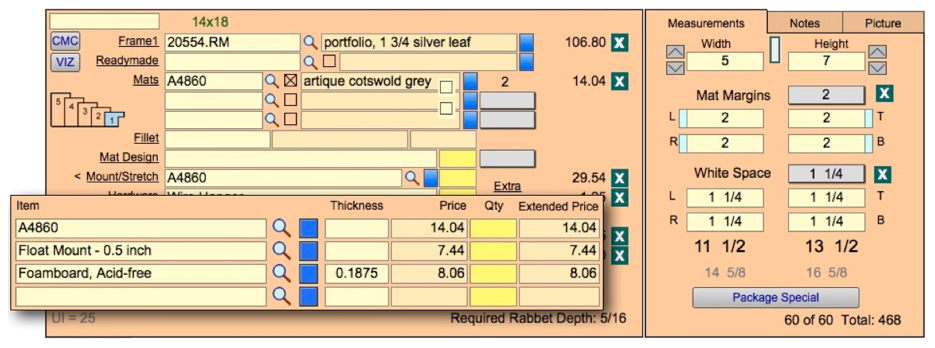

Add a Float Mount on a Work Order
How to enter a Float Mount design on a Work Order
Secure the artwork to a rigid substrate within the opening of the window mat so that all edges are visible when viewing.


-
On the Work Order, enter the frame and mat as normal. Enter the true size of the art in the Measurements tab in the Width and Height fields.
-
If you have a top mat with an opening in your design, enter the amount of matboard to appear around the art in the Mat Margins field.
-
In the White Space fields, enter the amount of air (or the gap) between the art and the edge of the matboard, e.g. 1 1/4″. (This is very helpful if the customer brings in a different size piece of art and wants it framed the same way.)
-
In the Framing Components section of the Work Order, enter the frame in Frame1.
-
If you have a mat with an opening cut into it, then enter the top mat into the Mats field. If you do not want the interior of the mat to show, then check the Reverse Bevel checkbox.
-
Click in the Mount/Stretch field to reveal the drop-down list. By-pass the list by clicking back into the field. Along with its prefix, type in the matboard # onto which you will be mounting the print. (Note: matboard bar codes will not read in this field). E.g. A4860.
OR
Eenter the name of the glass you will be mounting onto. You must use the exact name of the glass as it appears in your glass/glazing list, i.e. Conservation Clear.
FrameReady will price the matboard in this field for the correct size. The mat will also show on your printed Work Order in the mounting field. -
Click Mount/Stretch to select the item you created in the Price Codes file to price the raising of the art above the backing, i.e. Float Mount, Shadow Mat, Raise Art, etc. This tells the production people which type of mounting to perform.
Note: When creating your item in the Price Codes file (e.g. Float Mount 1/2 inch, or Shadow Mat 3/16 inch, Raise Art 1/4 inch, etc.) do NOT use the inch symbol (“) as this character is part of a search operator used in FileMaker Pro.
You can have your item appear in either the Mat Design, Mounting or Extra fields. The Mounting group provides more options for pricing than the other two groups.
-
Select any other items which need to be used in your design. You can chose to enter them in the order they will be used, e.g. Float Art, A4860, Foamboard (see illustration.)
-
Click Done to exit the Mount/Stretch detail screen and return to the Work Order entry screen.
Continue to enter the other elements of your design.
Float and Mat Combination
Mat and float presentations are used when the artwork has a deckled or uneven edge or it is important that none of the image is covered and a mat is deep enough to provide the separation from the art and the glazing.*
Float Only
Float presentations are used when the artwork has a deckled or uneven edge or the entire image is critical and it is important that nothing is covered. It is also used on artwork that is dimensional or doesn’t lie flat which requires a spacer to separate it from the glazing. Spacers can be made of wood, plastic, or matboard.*
* Source: Metropolitan Picture Framing
© 2023 Adatasol, Inc.